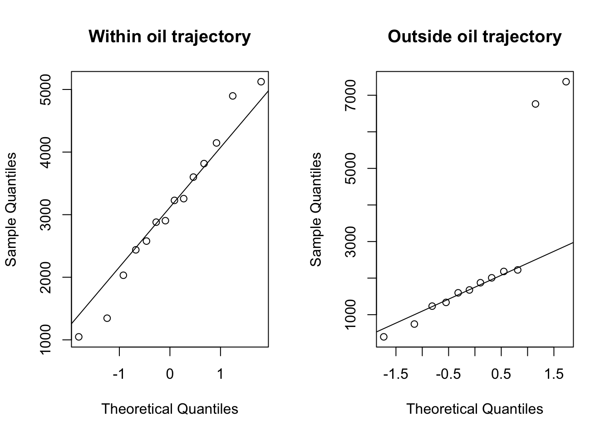
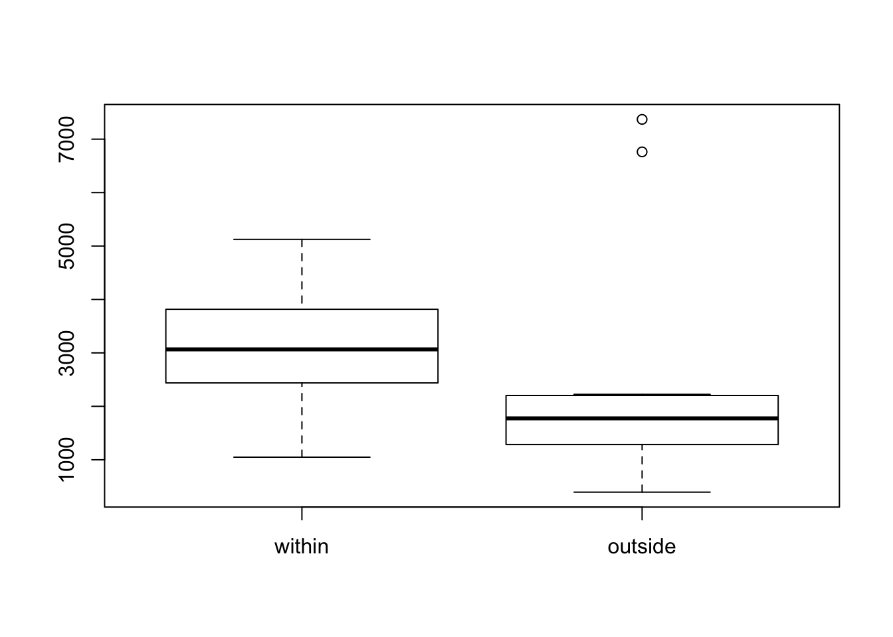
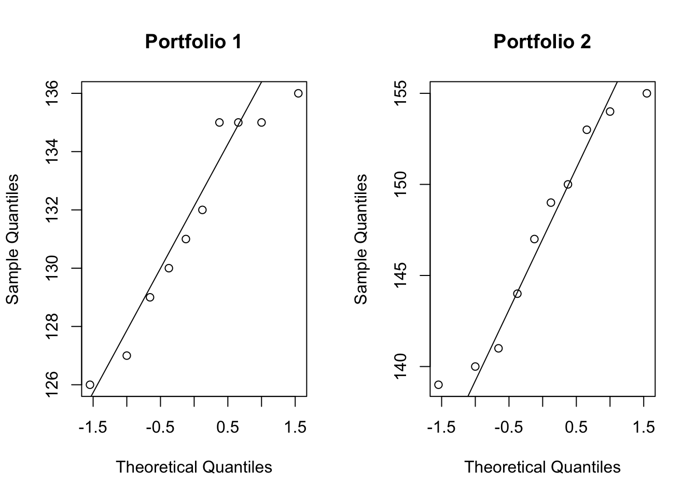

F1 = c(77,40,11,31,28,50,53,26,33)
F2 = c(76,38,10,29,27,48,51,24,32)
t.test(F1, F2, paired = T, conf.level = 0.90)##
## Paired t-test
##
## data: F1 and F2
## t = 8.8544, df = 8, p-value = 2.089e-05
## alternative hypothesis: true difference in means is not equal to 0
## 90 percent confidence interval:
## 1.228866 1.882245
## sample estimates:
## mean of the differences
## 1.555556abundance = c(5124,2904,3600,2880,2578,4146,1048,1336,394,7370,6762,744,1874,
3228,2032,3256,3816,2438,4897,1346,1676,2008,2224,1234,1598,2182)
depth = c(rep(40, 13), rep(100, 13))
oil_traj = c(rep(c("within", "outside"), c(7,6)),
rep(c("within", "outside"), c(7,6)))
pop_abundance = data.frame(abundance, as.factor(depth), oil_traj)library(dplyr)##
## Attaching package: 'dplyr'## The following object is masked from 'package:gridExtra':
##
## combine## The following object is masked from 'package:MASS':
##
## select## The following objects are masked from 'package:plyr':
##
## arrange, count, desc, failwith, id, mutate, rename, summarise,
## summarize## The following objects are masked from 'package:stats':
##
## filter, lag## The following objects are masked from 'package:base':
##
## intersect, setdiff, setequal, unionwithin = filter(pop_abundance, oil_traj=='within')$abundance
outside = filter(pop_abundance, oil_traj=='outside')$abundancevar(within) = 1.419065210^{6}var(outside) = 4.966544310^{6}t.test(within, outside, var.equal = FALSE)##
## Welch Two Sample t-test
##
## data: within and outside
## t = 0.89466, df = 16.224, p-value = 0.384
## alternative hypothesis: true difference in means is not equal to 0
## 95 percent confidence interval:
## -877.7749 2162.1558
## sample estimates:
## mean of x mean of y
## 3092.357 2450.167par(mfcol=c(1,2))
qqnorm(within, main="Within oil trajectory")
qqline(within)
qqnorm(outside, main="Outside oil trajectory")
qqline(outside)
par(mfcol=c(1,1))
boxplot(within, outside, names=c("within", "outside"))
portfolio1 = c(130,135,135,131,129,135,126,136,127,132)
portfolio2 = c(154,144,147,150,155,153,149,139,140,141)
sd(portfolio1)^2## [1] 12.93333library(car)##
## Attaching package: 'car'## The following object is masked from 'package:dplyr':
##
## recode## The following objects are masked from 'package:HH':
##
## logit, vifdt = data.frame(y=c(portfolio1, portfolio2),
group=rep(c("1", "2"), c(length(portfolio1), length(portfolio2))))
leveneTest(y~group, dt)## Levene's Test for Homogeneity of Variance (center = median)
## Df F value Pr(>F)
## group 1 3.5122 0.07724 .
## 18
## ---
## Signif. codes: 0 '***' 0.001 '**' 0.01 '*' 0.05 '.' 0.1 ' ' 1var.test(portfolio1, portfolio2)##
## F test to compare two variances
##
## data: portfolio1 and portfolio2
## F = 0.36421, num df = 9, denom df = 9, p-value = 0.1485
## alternative hypothesis: true ratio of variances is not equal to 1
## 95 percent confidence interval:
## 0.09046343 1.46628824
## sample estimates:
## ratio of variances
## 0.3642053par(mfcol=c(1,2))
qqnorm(portfolio1, main = "Portfolio 1")
qqline(portfolio1)
qqnorm(portfolio2, main = "Portfolio 2")
qqline(portfolio2)
par(mfcol=c(1,1))Since the two samples are randomly selected, normally distributed and have equal variance, I choose the pooled variance t-test to detect if there is any differences in the average returns for the two portfolios.
t.test(portfolio1, portfolio2, var.equal = T)##
## Two Sample t-test
##
## data: portfolio1 and portfolio2
## t = -7.0877, df = 18, p-value = 1.314e-06
## alternative hypothesis: true difference in means is not equal to 0
## 95 percent confidence interval:
## -20.22415 -10.97585
## sample estimates:
## mean of x mean of y
## 131.6 147.2